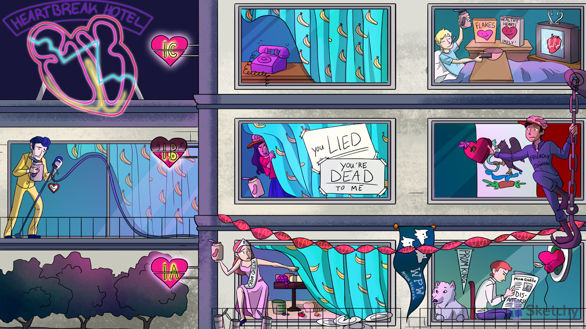

Soloist: class I antiarrhythmics
Phase 0: upstroke dictated by Na+
Phase 2: plateau dictated by Ca2+
Phase 3: repolarization dictated by K+
Soloist holding peanut butter jar: class I antiarrhythmics block sodium channels
Soloist tipping mic stand: class I antiarrhythmics decrease the slope of the phase 0 upstroke (slows conduction of the cardiac AP)
Inactivating spoon in open peanut butter jar: class I antiarrhythmics bind to open or inactivated Na+ channels
Heart watch tipping mic stand: “use dependance”- class I antiarrhythmics have a greater effect on rapidly depolarizing tissues (increased heart rate causes slower phase 0 upstroke)
Potassium banana curtain: K+ current present during phase 2 (plateau) and phase 3 (repolarization) of the cardiac action potential
Illuminated atria, ventricles, and His-Purkinje system: class I antiarrhythmics affect the Na+ dependent cardiac action potential (no action at the SA and AV nodes)
Wide QRS shaped crack: class I antiarrhythmics widen the QRS complex on the ECG (decreased AP conduction velocity)]
Class IA antiarrhythmics: quinidine, procainamide, disopyramide
Dining prom queen: quinidine (class IA antiarrhythmic)
Prom king: procainamide (class IA antiarrhythmic)
“Disappears!”: disopyramide (class IA antiarrhythmic)
Lightly held peanut butter jar: class IA antiarrhythmics have an intermediate binding affinity for the Na+ channel (intermediate use-dependence, moderate slowing of the phase 0 upstroke)
Pushing away the curtain: class IA antiarrhythmics also block K+ channels, prolonging phase 2 and 3 of the cardiac action potential → prolonged refractory period
Illuminated top and bottom of heart: class IA antiarrhythmics treat supraventricular and ventricular arrhythmias
White wolf pack: class IA antiarrhythmics treat Wolff-Parkinson-White (WPW) syndrome (a type of SVT)
Tin cans: quinidine toxicity can cause cinchonism (a syndrome of tinnitus, headache,dizziness)
Broken plates: quinidine can cause thrombocytopenia
Prom king’s lupus wolf: procainamide can cause a lupus-like syndrome
Darts in failing heart balloon: disopyramide can exacerbate heart failure (negative inotropy)
Twisted torsades streamer: class IA antiarrhythmics can cause Q-T interval
prolongation (precipitates torsades)
Class IB antiarrhythmics: lidocaine, mexiletine, phenytoin
“LIED”: lidocaine (class IB antiarrhythmic)
Friendly Towing: phenytoin (an anti-epileptic) shows some class IB antiarrhythmic properties
Mexican flag: mexiletine (class IB antiarrhythmic)
Dropped peanut butter jar: class IB antiarrhythmics have an low binding affinity for the Na+ channel (low use-dependence, modest slowing of the phase 0 upstroke)
Pulling in the curtain: class IB antiarrhythmics shorten phase 2 and 3 of the cardiac action potential→ shortened refractory period
Illuminated, cracked bottom of heart: class IB antiarrhythmics treat ventricular
arrhythmias (especially in ischemic tissue)
“DEAD”: class IB antiarrhythmics treat ischemia induced ventricular arrhythmias
Brain trucker hat: class IB antiarrhythmics cause neurological side effects (e.g.
paresthesias, tremor, convulsions)
Class IC antiarrhythmics: propafenone, flecainide
Flakes: flecainide (class IC antiarrhythmic)
purple phone: propafenone (class IC antiarrhythmic)
Tightly held peanut butter jar: class IC antiarrhythmics have an strong binding affinity for the Na+ channel (strong use-dependence, drastic slowing of the phase 0 upstroke)
Untouched potassium curtain: class IC antiarrhythmics do not affect the cardiac action potential duration
Illuminated top and bottom of heart: class IC antiarrhythmics treat supraventricular and ventricular arrhythmias
Irregularly irregular signal: class IC antiarrhythmics treat atrial fibrillation (and flutter)
Converting the signal: class IC antiarrhythmics can restore and maintain normal sinus rhythm in atrial fibrillation and flutter
“Healthy hearts only!”: class IC antiarrhythmics are contraindicated in patients with history of structural or ischemic heart disease (proarrhythmic effects)